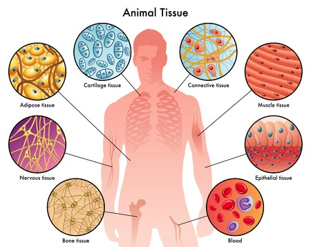
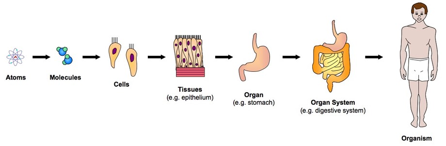

Single cell biology:
Studying every cell
What is a cell?
“The cell is the most basic unit of life”
-Theodor Schwann

All tissues are made up of various cell types
There are about 200 different cell types in the human body 
These cells:
- Look different
- Do different things
- Make different things
- Talk to each other
Cells -> Tissues -> Organs
How did scientist find different cell types?
Retina by Ramon y Cajal 1852 - 1934

Many cell types were simply identified by looking under a microscope and looking at morphology. Technological advances in microscopes made this easier and faster
But what makes them different?
The different genes (parts list of a cell) expressed define the features and functions of cell types
Identifying these genes are and how they change is an continuing research project
CD45 expression in Immune cells
EMCN expression Endothelial cells
In single cell biology we attempt to define these genes in a cell and tissue specific manner
This lets us:
- Understand what makes them different
- Discover how cells talk to each other
- Identify what goes wrong in diseases
- Try to remove, repair or replace cells that have gone awry
Imagine this circle to be a tissue

Till 5 years ago, we had the ability to define the genes present in the entire circle as sum
But really, we know that there are many different cell types present by looking under the microscope
So that big cirle really is:

Microfluidics enables us to capture each cell and look at all the genes
Clustering: Group like cells together
This method allows us to define 1000's of genes in each cell.

We can now define:
- The genes specific to each cell type
- The heterogeneity of cells in each cell type
- Study interactions
Cell types of the pancreatic islets
These cell types coordinate the response increased sugar in your blood after a meal

Pathway to convert food to molecular energy

Delta cells: Integrator of signals

Questions?
email me: mohan.bolisetty@jax.org